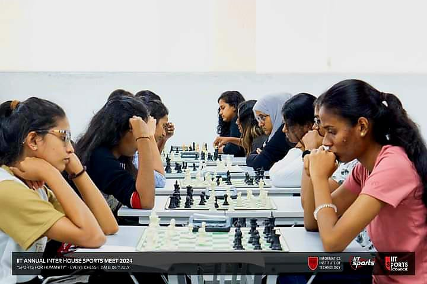
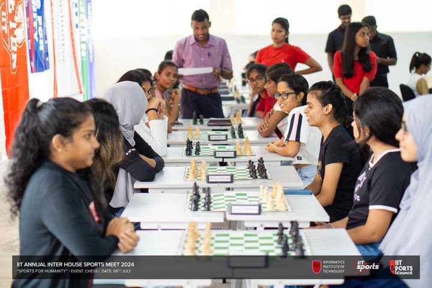
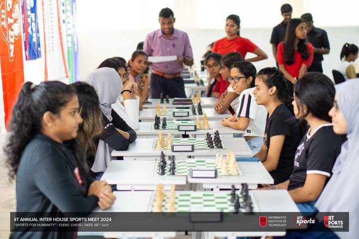
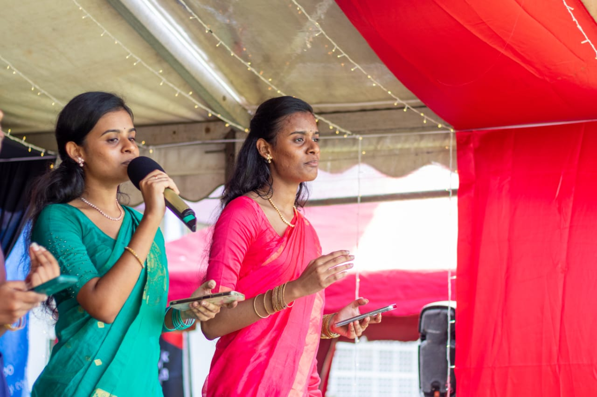
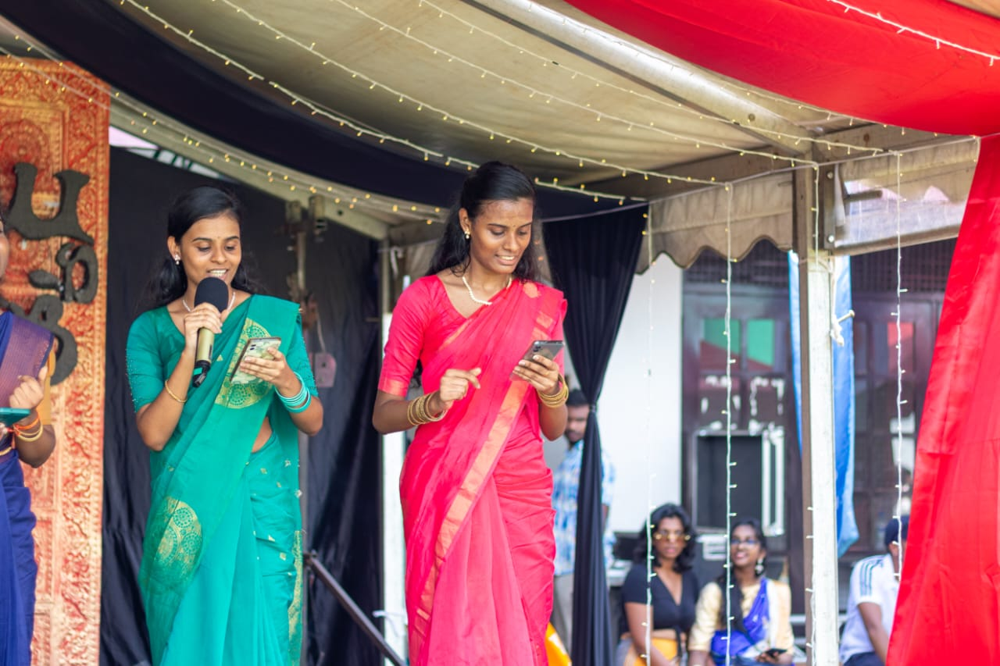
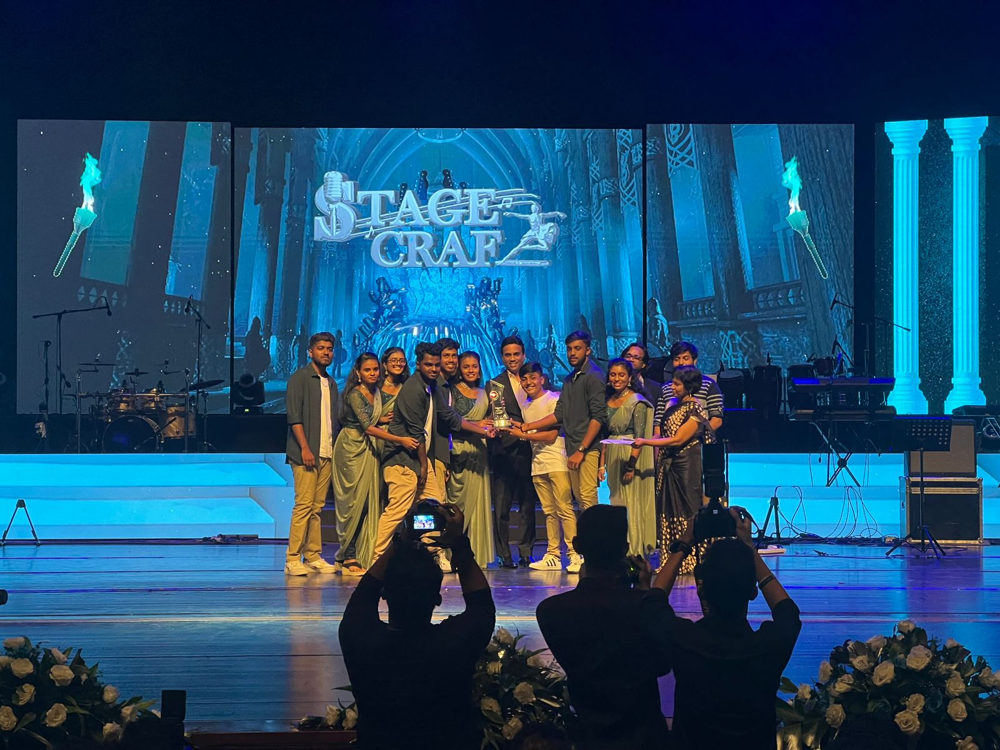
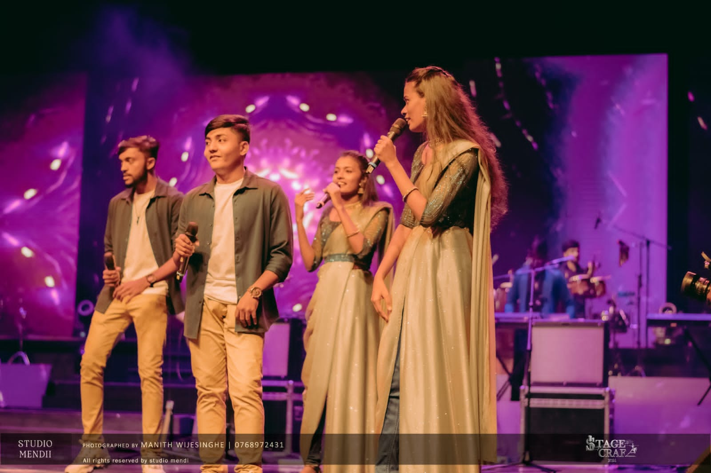
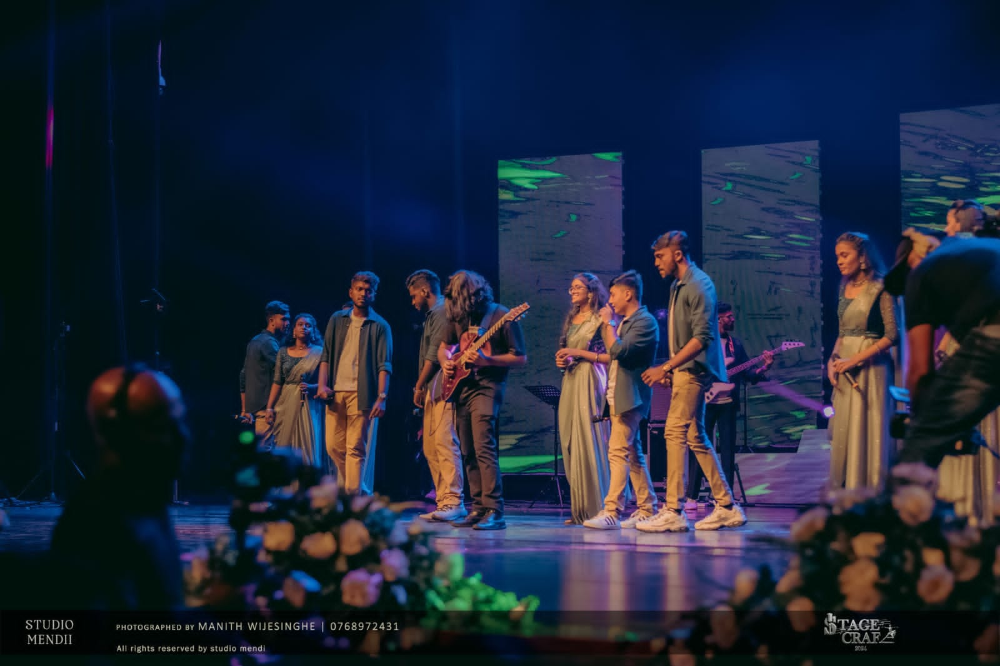
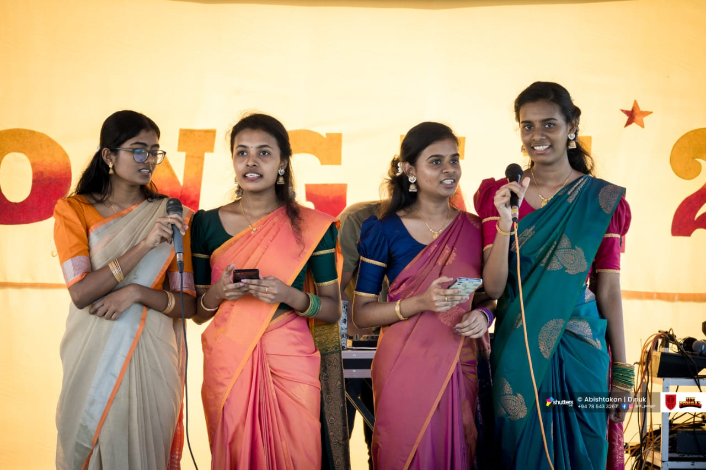
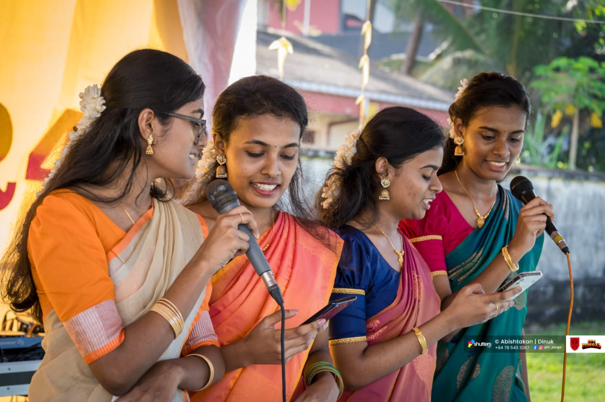

Extracurricular Activities
I am passionate about extracurricular activities, including singing and sports.
On July 15, 2024, I participated in a chess competition held at IIT. It was an exciting day, as i managed to win several matches and challenge myself against some skilled opponents. Chess is a game i truly enjoy, so this experience was both memorable and rewarding. It stands out as one of the unforgettable days in my journey, marking a meaningful step in my chess career.
 
On May 12, 2024, I had the chance to paricipate in the Avurudu (New Year) celebrations held at our University, IIT. This was a vibrant event filled with cultural activities, and i was thrilled to be part of it. I performed in a singing, bringing traditional songs to life as part of the celebration. It was a wonderful experience, allowing me to share in the festive spirit with my peers and celebrate our cultural heritage through music. photos and more details from the Avurudu event are shared on my blog!
 On March 5, I had the exciting opportunity to perform in a group singing at the Stage Craft competition, held at the Nelum Pokuna Mahinda Rajapaksa Theatre. This event was especially thrilling as our group gave it our all on stage, showcasing a mix of harmony, energy, and passion. We were thrilled to win 1st place, a recognition that celebrated both our hard work and the strong teamwork we shared. It was a memorable experience, performing in front of such a large audience at such a prestigious venue, and one that continues to inspire me to pursue more in the performing arts. I have shared some highlights from this event on my blog, along with other activities from the year!.
  On January 22, 2024, I had the opportunity to participate in a singing performance held at the University of IIT in celebration of Pongal Day. It was a memorable event where i showcased my singing skills alongside other talented performers. I have shared photos from this event on my blog page, along with other experiences from this year. I look forward to continuing my involvement in more such events!.
 